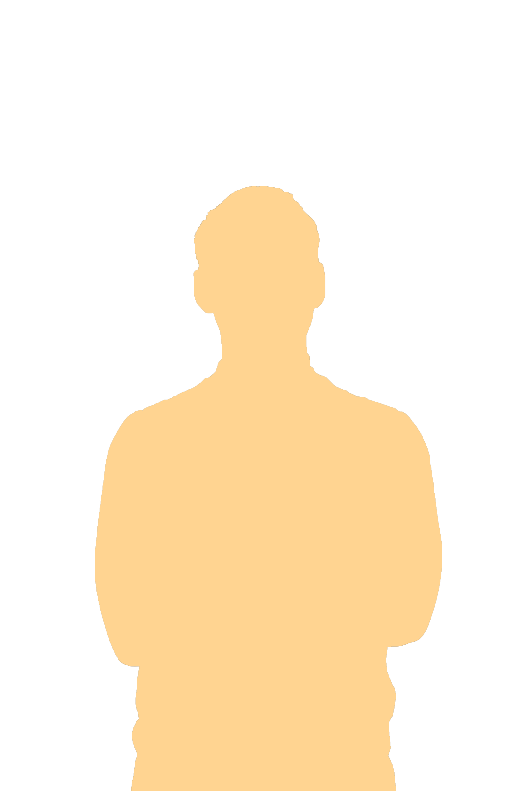
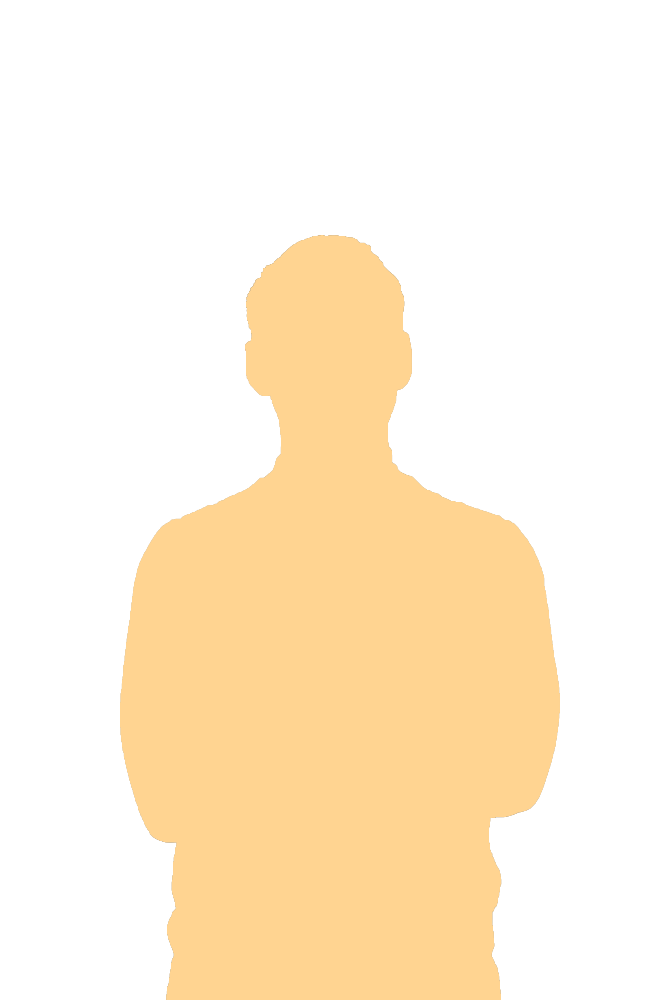

PROJEKTER
×
Matas
Matas projektet var i samarabrjede med Hesehuse og var projektet lige inden eksamenprojektet for 2. Semester.


For at se prototypen for proejektet klik her: Hesehuse - Matas (Det skal lige siges at den kun er lavet til mobilversion (iPhone X))
 
